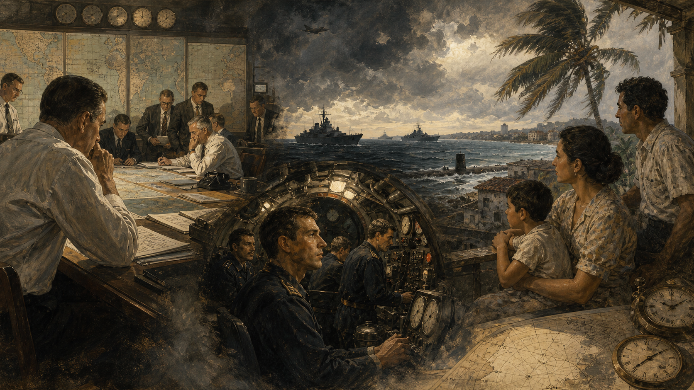

关键地点关系
1962年10月22日傍晚，哈瓦那的天还没有完全黑。十二岁的米格尔和弟弟爬上公寓屋顶，想把晾晒的床单收回来。街角的收音机忽然同时提高了音量：美国总统肯尼迪正在电视和广播里说，古巴岛上出现了苏联的进攻性导弹，美国将对驶往古巴的军用船只实行“隔离”。孩子听不懂“中程弹道导弹”，却看见父亲把窗户贴上胶带，母亲往玻璃瓶里装水。九十英里外的佛罗里达，人们也在抢购罐头、检查后院的防空洞。两个海岸上的家庭都觉得，对面的人也许会在明早毁掉自己的生活。

照片里像铅笔划过的痕迹
危机在公众面前从10月22日开始，在白宫里却早了六天。10月14日，一架U-2高空侦察机飞过古巴西部。它携带的相机从两万多米高空连续拍摄地面。照片送到华盛顿附近的国家摄影判读中心后，分析员迪诺·布鲁焦尼和同事在灯箱上比较阴影、道路和长条形物体。他们认出了苏联R-12中程导弹的运输车、发射阵地和帐篷。单张照片并不会自动说话；结论来自尺寸测量、既有情报与多张影像的交叉核对。
10月16日上午，肯尼迪看到放大的照片。导弹一旦部署完成，可携带核弹头打击美国东南部和华盛顿，预警时间大为缩短。他没有立刻演说，而是召集一组高级官员，后来称为国家安全委员会执行委员会，简称“执委会”。会议录音后来解密，让我们听见一个重要事实：今天被讲成必然正确的决定，当时都充满争执。有人主张轰炸，有人主张入侵，有人担心不行动会让盟友怀疑美国，也有人提醒，空袭无法保证摧毁全部导弹。
怎样读一张“决定世界命运”的照片
美国国家档案馆保存了侦察照片、肯尼迪讲话和隔离令。照片证明了阵地建设，却不能单独证明每枚导弹是否已装核弹头、苏军会在什么条件下发射。后来档案显示，古巴岛上已有战术核武器，而美国决策者当时并不完全知道。这正是史料的边界：它照亮一部分，也留下危险的暗处。
保密给肯尼迪争取了思考时间，也带来道德问题。古巴政府与普通民众并不知道美国已掌握证据；美国盟友也暂未被告知。华盛顿一边讨论战争，一边维持总统公开日程，防止莫斯科察觉。历史故事常把这段时间写成肯尼迪一个人的冷静，但会议记录显示，冷静其实来自制度中的争论、时间的争取，以及有人不断追问“如果第一步失败，第二步是什么”。
小岛为何允许大国把导弹搬进来
要理解古巴的选择，不能从导弹抵达才开始。古巴距离美国佛罗里达很近，长期处于美国强大经济和政治影响之下。1959年，菲德尔·卡斯特罗领导的革命推翻巴蒂斯塔政权。革命政府进行土地改革和国有化，美国企业利益受损；美国逐步制裁古巴，古巴则与苏联靠近。双方都把自己描述成防御者：华盛顿说它面对的是西半球的共产主义扩张，哈瓦那说它面对的是一个曾干预古巴事务的强邻。
1961年4月，一支由美国中央情报局训练和支持的古巴流亡者部队在猪湾登陆，试图推翻卡斯特罗。行动失败，但它向哈瓦那传递的信息十分清楚：入侵不是想象。此后美国又推动代号“猫鼬行动”的秘密破坏与颠覆计划。古巴领导人有理由相信更大规模进攻可能到来。卡斯特罗接受苏联导弹，不只是为了社会主义阵营，也为了给岛屿套上一件危险的“防弹衣”。
苏联领导人赫鲁晓夫还有自己的算盘。美国在意大利和土耳其部署“朱庇特”核导弹，能威胁苏联腹地；美国洲际核力量总体占优。把导弹放到古巴，可以迅速改善苏联的战略位置，又能保卫盟友。它也可能让美国体验苏联家门口有敌方导弹的感觉。可是“对称”并不等于风险相同：秘密部署一旦突然曝光，很容易让对手把它理解为欺骗和进攻准备。
从哈瓦那看
猪湾入侵刚过去一年多，美国制裁和秘密行动仍在继续。接受苏联武器意味着提高入侵成本，维护革命生存。古巴不是棋盘，而是试图避免再次被推翻的国家。
从华盛顿看
可携核弹头的导弹秘密进入距离本土极近的岛屿，改变预警时间，也挑战总统此前公开警告。若接受既成事实，政府担心威慑与盟友信任受损。
这两种安全感互相咬住，形成国际政治中常见的“安全困境”：一方为了自保增加武器，另一方看见的却是进攻能力，于是也提高戒备。双方都可以真诚地说“是对方先威胁我”，而世界仍会一步步更危险。理解这条机制，比寻找一个天生邪恶的民族更接近历史。
一场用冬衣掩护的热带行动
苏联把部署计划命名为“阿纳德尔行动”。阿纳德尔是远东寒冷地区的河流和城市，参与者甚至领到冬装，以便让人误以为部队将向北方调动。真正的目的地却是热带古巴。士兵挤在货船舱内，设备伪装成农业机械，船长到海上后才拆开写有最终航向的密封指令。这种保密一度成功，也意味着许多执行者不知道全局。
到10月，数万名苏联军人和多种武器已抵达古巴。最令人后怕的并不只是美国发现的中程导弹。后来苏联与古巴资料表明，岛上还有用于对付登陆部队的战术核武器。如果美国按部分将领建议发动入侵，美军可能遭遇核打击；美国随后如何报复，没有人能保证。决策者以为自己在控制升级阶梯，却不知道楼梯上缺了几级。
卡斯特罗并非莫斯科的木偶。他欢迎能阻止入侵的力量，却对苏联撤弹时没有充分征求古巴意见深感愤怒。古巴希望获得公开、可信的安全保证，苏联则把导弹既当盾牌也当谈判筹码。小国与大国结盟能够得到保护，也可能在关键交易中发现自己的声音被放在一旁。
行动的隐蔽方式还制造了信誉危机。赫鲁晓夫此前通过公开和私下渠道暗示，苏联不会在古巴部署进攻性武器。美国发现事实相反后，不只计算导弹数量，也怀疑以后还能否相信苏联保证。外交中的信誉不是面子，而是对方判断承诺能否执行的依据；然而，为了“维护信誉”而拒绝退让，又可能把人推向战争。
空袭、入侵，还是给对手留一扇门
执委会最初讨论的选择大致有三类。第一，秘密交涉，代价是导弹可能在谈判期间完成部署；第二，突然空袭并随后入侵，速度快，却可能漏掉导弹、杀死苏联军人并引发对柏林或土耳其的报复；第三，海上“隔离”，阻止更多进攻性武器进入，同时要求撤除已有导弹。隔离不能立刻消除岛上威胁，但给双方留下了几天。
空袭方案听起来像外科手术，实际不是。侦察照片可能漏掉伪装阵地，轰炸会杀死苏联人员，古巴防空部队也会还击。肯尼迪尤其担心，在没有警告的情况下轰炸会让美国想起珍珠港式突袭，损害道义地位。军方则担心拖延让导弹进入战备。双方并非一边勇敢、一边懦弱，而是在不同风险之间排序。
肯尼迪最终选择海上隔离，同时准备空袭和入侵。他在10月22日向全国讲话，公布照片，要求苏联撤弹，并警告从古巴发射的任何核导弹都将被视为苏联对美国的攻击。公众第一次知道发生了什么。学校安排防空演练，教堂延长开放，家庭把孩子送离大城市。广播里坚定的总统话语背后，是一份没有人知道会不会奏效的计划。
父子暂停一下：慢一步一定更软弱吗？
如果你知道拖延会让对方多准备一天，但立即攻击又可能启动无法停止的报复，你会怎样定义“勇敢”？请分别替主张空袭和主张隔离的人说出最有力的理由，再找出两种方案各自最害怕发生的事。
这里有一个容易忽略的领导力细节：肯尼迪让会议继续争论，并时常离开房间，减少下属迎合总统的压力。他并没有消除群体偏见，也不是每个决定都正确，但比猪湾事件时更警惕“所有人迅速同意”的危险。制度的价值往往不是保证聪明人掌权，而是让不同意见在灾难发生前有机会说完。
海上的刹车，联合国里的照片
10月24日，隔离线生效。美国海军舰艇在加勒比海上等待苏联船只。新闻画面后来常把这一刻表现成两支舰队迎面冲刺、最后一秒停下，但实际情况更复杂：部分苏联船只提前转向或停航，油轮等船继续前进，美国也谨慎选择检查对象。每一名舰长都可能因误读命令、无线电延迟或年轻水兵紧张而改变局势。
同一天前后，美苏核力量提高戒备。美国战略空军司令部的部分轰炸机升空，核武器进入更高准备状态。信号的目的，是让对手相信自己不会退缩；危险在于，对手也可能因此判断攻击迫在眉睫。威慑依靠“让人害怕”，危机管理却需要“让人仍敢于等待”，两者之间只有一条很窄的路。
10月25日，联合国安理会出现了危机中最著名的一幕。美国代表阿德莱·史蒂文森追问苏联代表佐林，苏联是否在古巴部署导弹，并展示航拍照片。史蒂文森说愿意等到“地狱结冰”才得到回答。这是一场有准备的公开外交胜利，但照片所证明的是阵地，不是美国所有行动都天然合法。联合国既是证据公开的舞台，也是中间人发挥作用的地方。
肯尼迪政府还努力维持盟友支持。北约盟国担心柏林成为报复目标，拉丁美洲国家对美国干预古巴有复杂记忆。危机并不是美苏关起门来决定全世界：土耳其担心本国防务，古巴担心被入侵，欧洲城市担心核战，海上的普通军人担心下一条命令。地图上的每个箭头都落在别人的家园。
“黑色星期六”：失控不是一个按钮
10月27日被称为“黑色星期六”。这一天，古巴上空一架美国U-2侦察机被苏制防空导弹击落，飞行员鲁道夫·安德森死亡。美国军方早已准备在侦察机被击落后攻击防空阵地，但肯尼迪没有立即批准。他不确定命令来自莫斯科、古巴领导层，还是当地苏军指挥官。暂停的几个小时阻止了一条预先写好的反击链自动运转。
同日，另一架U-2因导航问题误入苏联领空，苏联战斗机升空拦截，美国战斗机也起飞护航，其中一些携带核空空导弹。两个彼此不知情的事件同时发生。所谓“世界差一点毁灭”，不是电影里一条红色倒计时，而是许多局部系统同时靠近边缘：天气、导航、授权规则、通信与人的疲惫叠在一起。
加勒比海下，苏联潜艇B-59被美国舰艇用训练用深水信号弹逼迫上浮。艇内炎热、缺氧，与莫斯科通信中断。艇员不知道战争是否已经开始，艇上又携带一枚核鱼雷。关于发射程序的具体细节在不同回忆与研究中仍有讨论，但多份材料都指出，军官瓦西里·阿尔希波夫反对使用核鱼雷，对避免升级发挥了关键作用。把他称作“一个人拯救世界”很动人，却也会遮住更深的问题：为什么制度把如此沉重的判断压到一艘失联潜艇里？
与此同时，赫鲁晓夫连续发来两封语气不同的信。第一封较私人，提出苏联撤弹，换取美国保证不入侵古巴；第二封公开加入美国撤走土耳其“朱庇特”导弹的要求。执委会担心苏联立场变硬。肯尼迪团队决定公开回复第一封中较易接受的条件，私下通过总统弟弟罗伯特·肯尼迪告诉苏联大使：土耳其导弹会在稍后撤走，但不能成为公开交换。
父子暂停一下：秘密交易公平吗？
公开说“没有交换”，私下却承诺撤走土耳其导弹，确实帮助双方下台阶，也让土耳其和古巴感到自己的安全被大国安排。若公开交易可能使盟友反对、危机破裂，秘密是否可以接受？谁有权替承受风险的人保密？
胜利叙事背后，谁被留在门外
10月28日，莫斯科电台播出赫鲁晓夫的回信：苏联同意拆除并运走古巴导弹，在联合国核查安排下执行；美国公开承诺不入侵古巴，并结束隔离。最紧张的阶段过去了。随后数周，苏联把战略导弹运走，伊尔-28轰炸机也撤离；美国最终解除海上隔离。几个月内，土耳其的老旧“朱庇特”导弹被撤除。
美国公众长期听到的版本是：肯尼迪坚定迫使赫鲁晓夫退却。苏联一度强调自己保卫了古巴革命。古巴的记忆则包含被盟友越过的愤怒。卡斯特罗提出更广泛要求，包括结束经济封锁、停止破坏活动和归还关塔那摩基地，但这些没有进入最终核心交换。古巴还拒绝允许联合国检查人员在岛上核查，最后主要通过美国侦察和苏联船上展示确认撤除。
“坚定带来和平”
这种解释强调，肯尼迪设定明确红线、动员盟友并准备武力，使秘密部署无法成为既成事实。没有可信压力，苏联未必撤弹。
“妥协避免战争”
这种解释强调，不入侵保证、土耳其撤弹和不立即报复U-2事件。若只展示强硬而不给对方安全出口，压力可能变成引爆器。
两种解释并不必然冲突。危机之所以结束，是压力和出口同时存在。只讲压力，会教人模仿强硬却忘记交换；只讲妥协，会忽略对方为何愿意谈判。真正困难的是判断多大的压力足以促成谈判，又不会让对手认为唯有先动手才能生存。这个数值没有公式。
还有一层不公平：土耳其政府没有参与秘密交易，古巴政府也没坐在最后谈判桌前。大国危机管理可能挽救全人类，却仍复制大国替小国决定的权力结构。我们可以同时承认协议避免灾难，也追问它如何对待盟友。历史成熟之处，正在于允许两句话同时成立。
危险过去以后，人们修了哪些护栏
危机让美苏领导人看见，通信太慢、误判太多。1963年，两国建立直接通信线路，俗称“热线”。它最初不是电影里的红色电话，而是文字电传系统，目的是减少翻译和层层传递造成的延迟。同年，美、苏、英签署《部分禁止核试验条约》，禁止在大气层、外层空间和水下进行核试验。危机没有结束冷战，却推动双方承认某些共同生存规则。
赫鲁晓夫两年后下台，导弹危机是否是直接原因，史学界有不同权重判断。苏联此后加快核力量建设，力求不再处于明显劣势。美国也没有停止核军备。换句话说，人们从危机学到两种相反教训：一是需要军控和沟通，二是需要更多可靠武器来避免被迫退让。核时代的悖论由此延续。
古巴得到美国不入侵的政治承诺，卡斯特罗政权继续存在，但美国对古巴的经济制裁长期延续。古巴家庭没有因为第十三天结束就回到危机前的世界。移民、物资短缺、政治压制与国家主权争论继续塑造几代人的生活。只用“美苏和解”作为结尾，会把故事发生地上的人再次移出镜头。
后来解密怎样改变故事
白宫录音、苏联档案、古巴材料与多国口述让研究者逐渐知道战术核武器、B-59潜艇和土耳其秘密承诺。解密不是把旧故事换成一个绝对真相，而是让因果关系更复杂：领导人的克制重要，普通军人的选择重要，运气也重要。
研究危机的人常争论“核威慑是否成功”。支持者说双方害怕相互毁灭，因此最终退让；批评者说，只要系统多次靠运气逃过事故，就不能称为可靠成功。一次俄罗斯轮盘赌没有击发，证明不了玩法安全。危机最诚实的遗产，或许不是某位领袖的天才，而是人类终于看见自己对复杂系统的控制远低于想象。
给今天的答案，不是一句“保持冷静”
今天谈古巴导弹危机，很容易提炼成一句漂亮格言：“领导人保持冷静，世界就会得救。”但冷静不是性格标签，而是一组可以建设的条件：让反对意见进入房间，为判断争取时间，不把预案当成自动命令，区分对方最高层意图与基层行动，为对手准备能解释给本国公众的出口，并让盟友和受影响者拥有声音。
危机也提醒我们，不要把国家想成一个人。美国政府内部有总统、军方、情报机关、外交官；苏联有克里姆林宫、驻古部队和潜艇指挥系统；古巴有领导层、军队与承受警报的民众。所谓“美国决定”“苏联反应”，只是为了叙述方便。真实世界里，信息沿着组织传递时会延迟、变形，甚至与最高领导人的意图相反。
最后要保留“运气”的位置。制度和个人选择缩小了灾难概率，但天气让侦察延迟、导航让飞机误入、潜艇失联、信件交错，这些偶然都可能改变结局。承认运气不是否定人的努力，而是反对傲慢：如果1962年的结局包含幸运，后人就没有资格认为每一次核对峙都能照样收场。
十三天真正留下的，不是强者如何逼退强者，而是所有人终于看见：在核时代，敌人的安全感也会进入自己的生存方程。
那晚，哈瓦那屋顶上的米格尔一家并不知道白宫会议说了什么，也不知道苏联潜艇里发生了争执。他们只知道警报后来没有响起。历史书把这称为“危机解决”，对一个家庭而言，它只是第二天仍能起床、排队买面包、去学校。世界历史最重要的尺度，最终仍是这些没有被战争夺走的普通清晨。
夜谈之后，留下六个问题
- 如果你是肯尼迪，只掌握不完整情报，会选择空袭、隔离还是秘密谈判？为什么？
- 古巴接受苏联导弹是自卫还是让本国更危险？两种判断能否同时有一部分成立？
- 为避免核战而对盟友隐瞒土耳其导弹交易，是否正当？
- 一项政策依靠几次个人克制和运气才没有酿灾，能否被称为“成功”？
- 公开展示强硬与私下提供退路，哪一种对和平更重要？
- 面对今天的核风险，哪些1962年的护栏仍有用，哪些已经不够？
可靠来源与延伸阅读
- 美国国家档案馆：Cuban Missile Crisis专题：侦察照片、隔离令、讲话与研究入口。
- 美国国务院历史办公室：古巴导弹危机概述：外交时间线与官方档案导航。
- 《美国对外关系文件》1961—1963，第十一卷：执委会记录、电报与领导人通信。
- 约翰·肯尼迪总统图书馆：Cuban Missile Crisis：十三天教育资料与原始记录。
- 肯尼迪图书馆互动档案：World on the Brink：按日期阅读文件与录音。
- 乔治·华盛顿大学国家安全档案馆：危机解密文件：美、苏、古巴多方材料。
- 美国国家档案馆《Prologue》：Forty Years Ago：照片发现与公开交锋的史料叙述。
- 耶鲁法学院阿瓦隆项目：古巴导弹危机文件集：讲话、通信与法律文本。
- 联合国条约集：《部分禁止核试验条约》：危机后军控的重要原始文本。
- 威尔逊中心：苏联潜艇与古巴导弹危机：B-59事件的档案研究与争议。